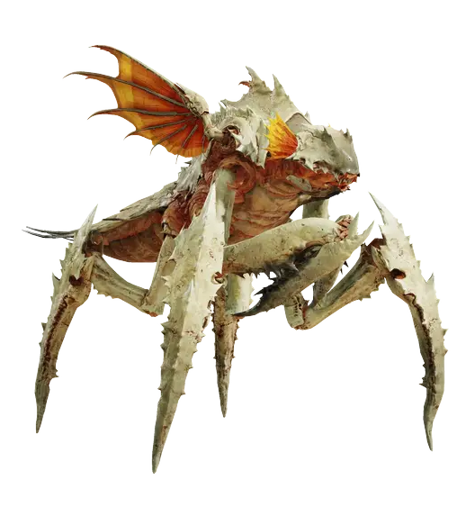
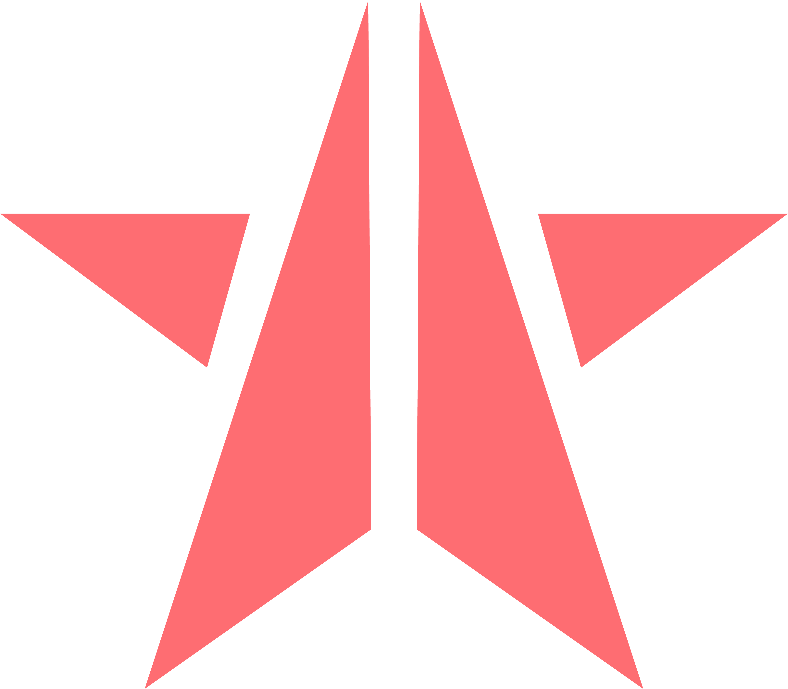
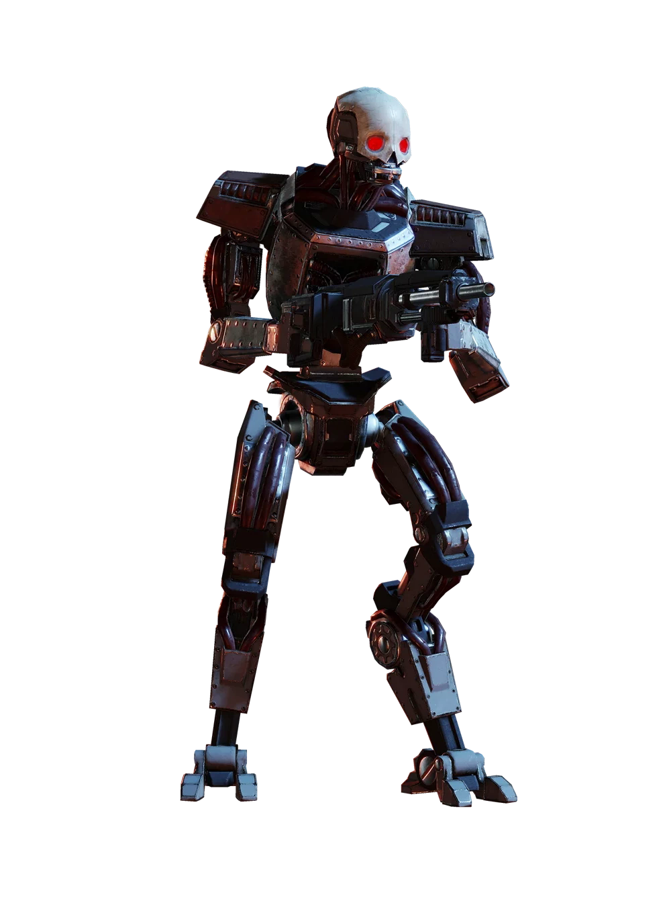
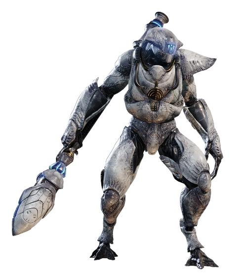

★ ★ ★ Freedom-Hating Factions ★ ★ ★
TERMINIDS
A vile and repulsive infestation. The Terminids swarm like vermin, crawling and skittering across the battlefield in numbers that defy belief. Their grotesque, insectoid bodies excrete foul-smelling toxins, and their acid-laced claws tear through flesh and armor alike. Everywhere they spread, decay and death follow.
This isn't just an enemy—it's a sickness. A plague. And the only cure is total eradication.
AUTOMATONS
A relentless and calculating enemy. These war machines, forged in the cold depths of enemy factories, are programmed for one purpose: total annihilation. Unyielding and merciless, the Automatons are relentless in their pursuit of destruction. Their advanced technology and overwhelming numbers make them a deadly force, and they will stop at nothing to crush the ideals of Super-Earth.
Engage with caution, Helldiver. Only the most prepared will survive their mechanical onslaught.
ILLUMINATE
A highly advanced and enigmatic species, the Illuminate are masters of manipulation and subversion. Using their radiant energy fields, they can control both minds and machines, turning them into instruments of their will. Their technology is alien and sophisticated, allowing them to disrupt and destabilize even the most secure defenses.
The Illuminate are not just enemies; they are a calculated threat, methodically weakening Super-Earth from within. Combat with them requires precision, strategy, and full patriotic devotion as their intelligence and power are formidable.
